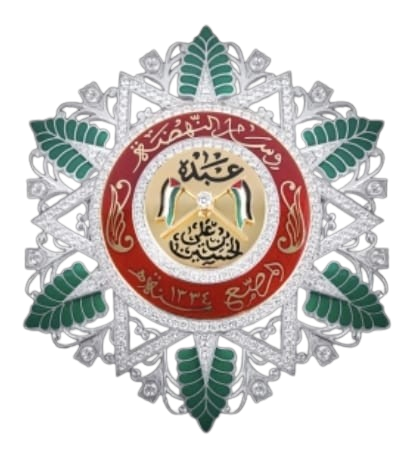
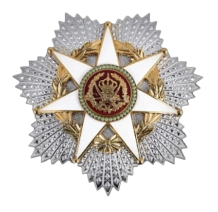
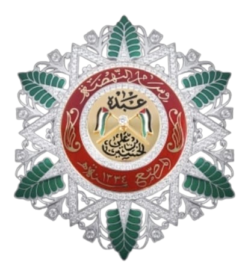
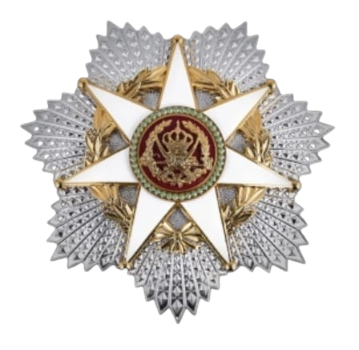

العميد الركن المتقاعد شاكر أحمد أبو حمّور، ضابط رفيع المستوى خدم في القوات المسلحة الأردنية لمدة (46) عاماً، منها (26) عاماً في الخدمة العسكرية الفعلية، قضى جلّها في الفرقة الآلية 12 الملكية
(المنطقة العسكرية الشمالية) حيث تنقل خلالها في مناصب قيادية وميدانية متعددة، أما السنوات الـ(20) الأخرى، فقد أمضاها في مجال الإعلام العسكري
إذاعة القوات المسلحة الأردنية؛ مما اكسبه خبرة طويلة في الميدان، وخبرة واسعة في القيادة والإدارة العسكرية، إلى جانب خبرته في مجال الإعلام العسكري، يُعد من الضباط الذين جمعوا بين الالتزام العسكري والخلق الرفيع. تميز بجديته العالية، وعمق إيمانه بالله، وحرصه الدائم على الصدق والأمانة في كل ما تولاه من مسؤوليات. عُرف بكرمه وتواضعه وشجاعته، وكان مثالاً في الانضباط العسكري، والوفاء، والانتماء للوطن، حيث ترك بصمة واضحة في كل موقع خدم فيه، سواء في الميدان أو في مجال الإعلام العسكري. جعل من الصدق والإخلاص منهجًا لا يتغير.
يقول الحق كما هو دون تزييف، ويُقدَّر لموقفه الثابت وصراحته النابعة من مبدأ، حتى لو لم تُعجب كلمته البعض، فهو لا يعرف التلون ولا يجيد الالتفاف، بل يسير على خطٍ مستقيم تُحترم فيه كلمته قبل أفعاله.

 


